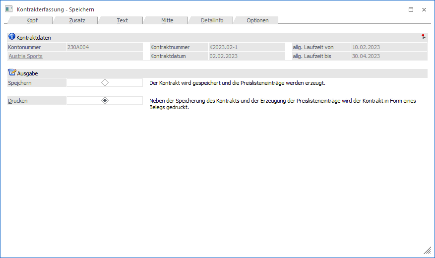
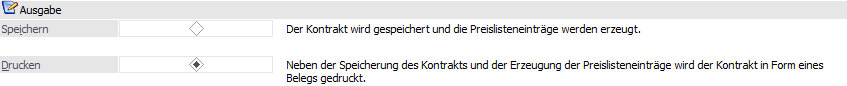
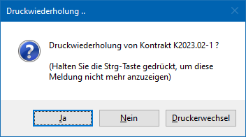

Nach Abschluss der Erfassungsarbeiten kann die Bearbeitung des Kontrakts im Fenster "Kontrakterfassung - Speichern" abgeschlossen werden.
Hinweis
Weitere Informationen, u.a. zu den Buttons des Programms "Kontrakterfassung", sind dem Kapitel Kontrakterfassung zu entnehmen.

Folgende Eingabefelder, Einstellungen und Information stehen zur Verfügung:
Kontraktdaten

Ø Kontonummer / Gruppennr.
An dieser Stelle wird die Nummer des Hauptkontos (WinLine START - Parameter - FAKT-Parameter - Belege - Allgemein - Option "Hauptkonto für Belege") bzw. der Gruppe des aktuellen Kontrakts angezeigt.
Ø Name
An dieser Stelle wird der Kontoname der Kontonummer bzw. der Gruppe dargestellt und das Fenster Kontoinformation kann direkt geöffnet werden.
Ø Kontraktnummer
An dieser Stelle wird die Kontraktnummer des Kontrakts angezeigt.
Ø Kontraktdatum
Hier wird das Kontraktdatum des Kontrakts dargestellt.
Ø allg. Laufzeit von / bis
In diesen Feldern wird die allgemeine Laufzeit des Kontrakts dargestellt.
Ausgabe

An dieser Stelle wird definiert, wie die Ausgabe des Kontrakts erfolgen soll.
Ø Speichern
Der Kontrakt wird gespeichert, d.h. die entsprechenden Preislisteneinträge werden erzeugt. Es erfolgt allerdings kein Ausdruck des Formulars. Alle gespeicherten Kontrakte können zu jedem beliebigen Zeitpunkt über den Menüpunkt Kontrakte drucken ausgegeben werden.
Hinweis
Es kann auch schon während der Erfassung der Beleg mit Shift+F5 zwischengespeichert werden.
Ø Drucken
Wurde der Kontrakt noch nicht mit Speichern in die Datenbank zurückgeschrieben, so geschieht dies bei Bestätigen der Option "Drucken". Außerdem wird der Kontrakt auf dem entsprechenden Drucker ausgegeben.
Hinweis
Nach dem Druck des Beleges erfolgt die Abfrage, ob der Beleg nochmals gedruckt werden soll:

Wenn die Abfrage nach der Druckwiederholung nicht mehr angezeigt werden soll, so muss - während der Button "Nein" angeklickt wird - die STRG-Taste gedrückt werden. Dadurch wird in der Datei "mesonic.ini" folgender Eintrag erzeugt:
[Kontrakt]
Druckwiederholung=1
Wenn dieser Eintrag aus der Datei "mesonic.ini" wieder entfernt wird, dann erfolgt wieder die Abfrage nach der Druckwiederholung.